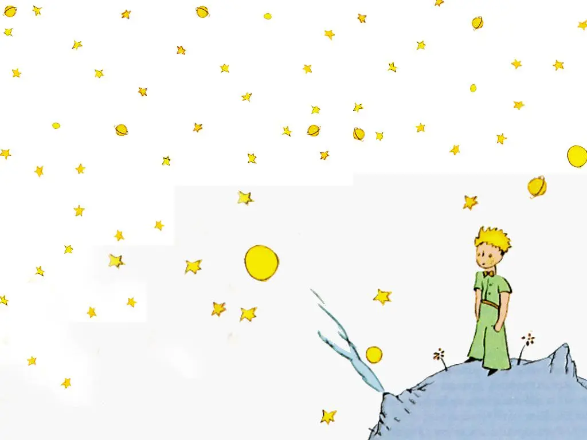
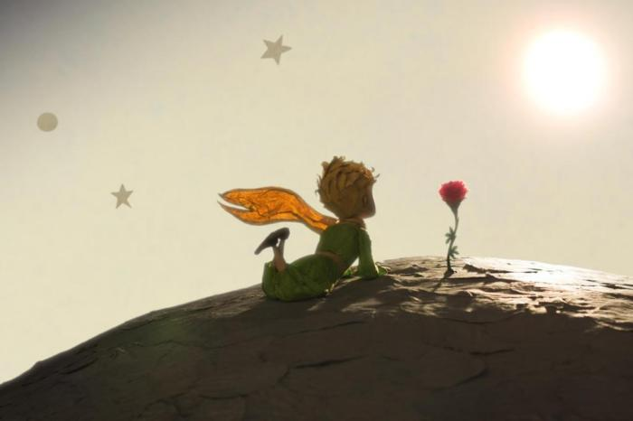

Resumo Pequeno Príncipe
O autor do livro é o personagem principal da história, que assume também o papel de narrador, contando sobre o fatídico dia em que o seu avião teria caído no meio do deserto do Saara.Lá, o personagem principal adormece e, ao acordar, se depara com o Pequeno Príncipe, que pede para que ele desenhe um cordeiro numa folha de papel.
O protagonista é frustrado em relação aos seus desenhos, pois nunca ninguém conseguia interpretar as suas artes da forma correta.Ao longo da história, o Pequeno Príncipe vai narrando as suas aventuras para o protagonista.
Ao ouvir as aventuras do Pequeno Príncipe, o protagonista vai percebendo como as pessoas deixam de dar valor as pequenas coisas da vida conforme vão crescendo.